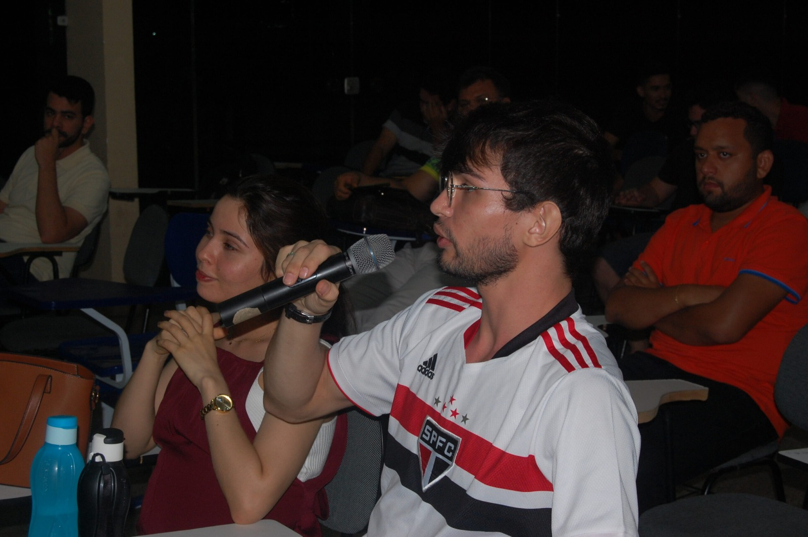
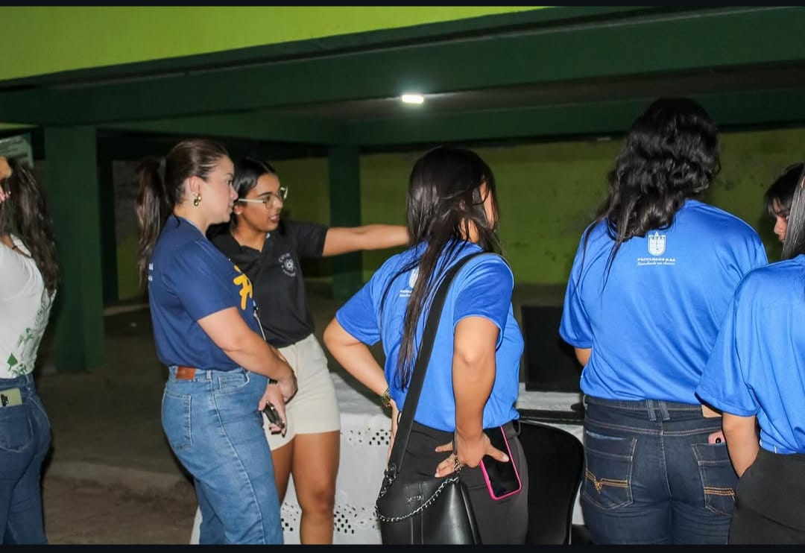
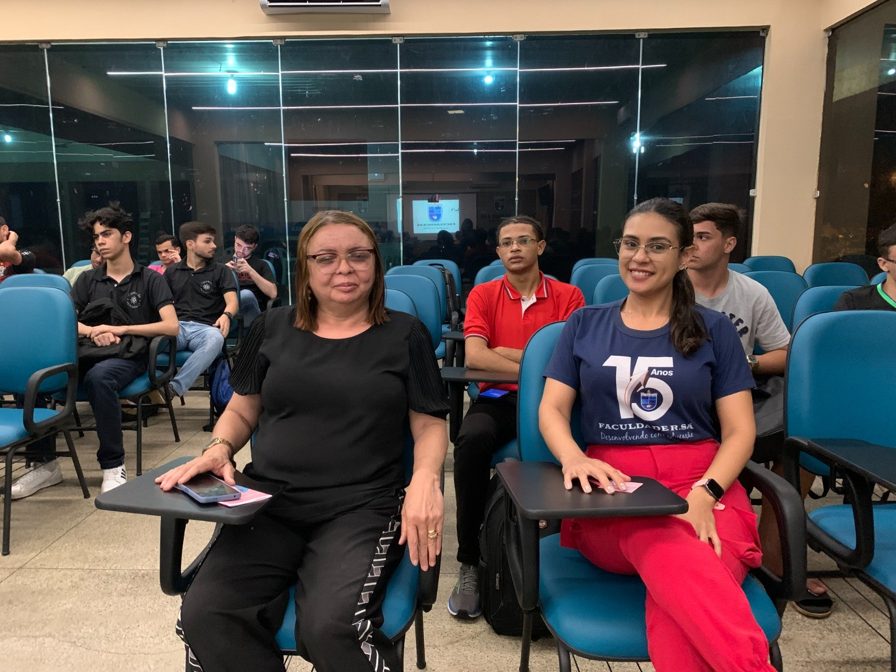
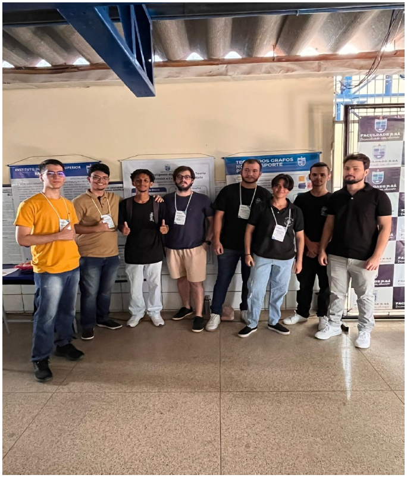
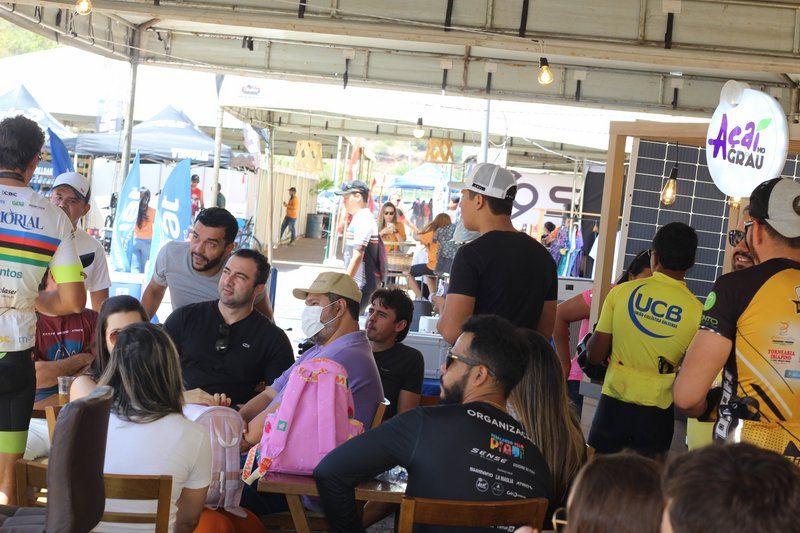
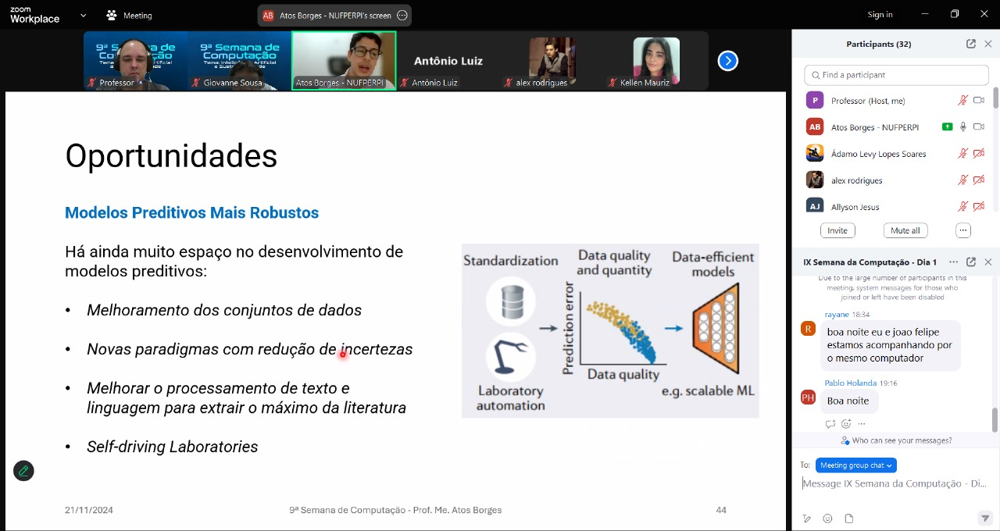
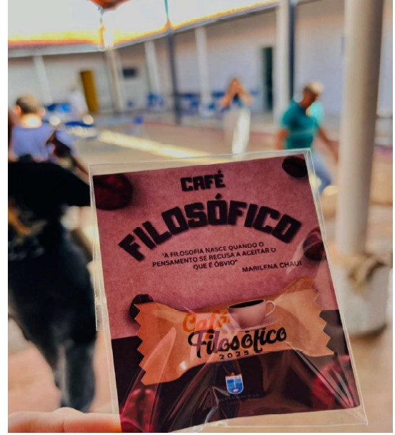
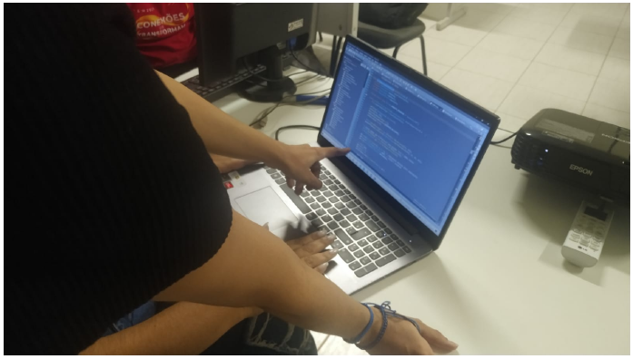

De 2006 a 2026: duas décadas de inovação, ensino, ciência e impacto social.
Duas décadas contribuindo para o desenvolvimento acadêmico, científico e tecnológico da região.
O curso acompanhou as transformações tecnológicas entre 2006 e 2026.
Profissionais formados ao longo de duas décadas, atuando em diferentes áreas da tecnologia.
Egressos atuando em empresas, instituições e projetos nacionais.
Clique abaixo para acessar o material completo das ações de extensão.
Abrir PDF• Desenvolvedora Sênior de Integração de Sistemas.
• Líder Técnica da equipe de Tesouraria do Banco Santander.
• Pós em Análise e Projeto de Sistema pela FACUMINAS.
• 2019
• Professor de Ciência da Computação do Instituto de Educação Superior Raimundo Sá.
• Engenheiro de Software.
• 2011
• Desenvolvedor Full Stack Sênior.
• Desenvolvedor Full Stack Sênior pela Virtex Telecom, atuando também com sistemas IPS e ERP.
• 2017
• Diretor e Gestor.
• Diretor dos setores relacionados à Infraestrutura de Redes na Virtex Telecom.
• Atua na empresa há 24 anos.
• 2010










Continuaremos formando profissionais, promovendo ciência e impulsionando inovação.
Anny Kelly Sousa Pereira
Fabrício Araújo Rocha
Gleydson Dayon Gomes de Sousa
Izaías de Araújo Dias Neto
João Augusto Carvalho Moura
João Victor Pacheco Pinheiro
Kayo Ranniel Lustosa dos Santos
Levy Emanuel da Costa
Lucas de Sousa Leal
Luis Sérgio da Silva Lourenço
Renato Ribeiro da Costa Filho
Vitória Maria de Carvalho Luz